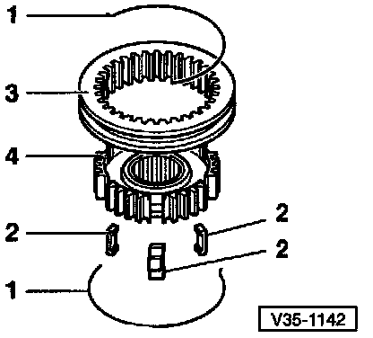
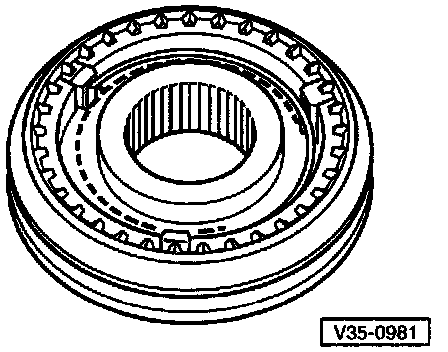
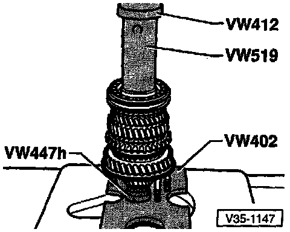

Disassembling/Assembling 3RD/4TH Operating Sleeve/Gear Hub

DIsassembling 3rd Gear (3GR) And 4th Gear (4GR) Operating Sleeve And Synchro-hub
- 1 Spring
- 2 Locking piece
- 3 Operating sleeve
- 4 Synchro-hub
- Slide operating sleeve over synchro-hub
- Recesses for locking pieces, in synchro-hub and in operating sleeve, must be aligned

Assembling 3rd Gear (3GR) And 4th Gear (4GR) Operating Sleeve And Synchro-hub
- Operating sleeve installed over synchro-hub
- Insert locking pieces and install springs
- Spring ends must be offset by 120°
- Bent end of spring must engage in locking piece

Pressing On 3rd Gear (3GR) And 4th Gear (4GR) Operating Sleeve And Synchro-hub With Operating Sleeve